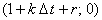

|
Математические модели химических реакторов могут содержать
дифференциальные уравнения типа (5.1), свободный член которых включает
искомую функцию u следующим образом:
Следует знать, как это может повлиять на устойчивость разностных схем (5.4), (5.5).
Разностная схема (5.4) абсолютно устойчива при v < 0.
Для уравнения (5.12) она преобразуется к виду:
Величины, обратные собственным числам оператора перехода, для данной разностной схемы будут
определяться соотношением:
Следовательно, их расположение на комплексной плоскости будет соответствовать окружности с
центром в точке  и радиусом r. Данная
окружность находится вне круга, соответствующего условию устойчивости (5.7) при любом значении r
(см. рисунок). Таким образом, при отрицательном значении параметра v наличие
функции u в свободном члене уравнения (5.12) не повлияет на абсолютную устойчивость
неявной разностной схемы с аппроксимацией производной по координате правой конечной разностью.
Аналогично можно доказать, что при v > 0 разностная
схема (5.5) также сохранит абсолютную устойчивость; отметим, что для
уравнения (5.12) она будет иметь вид:
|